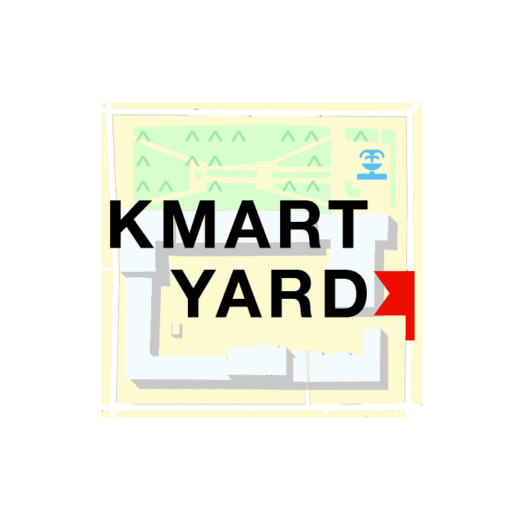

Задача: зробити логотип для Kmart Yard
Kmart yard — це платформа для реалізації спільних культурних, освітніх, мистецько-інтелектуальних проектів для могилянців, де вони б могли почуватись комфортно й працювати, навчатись, спілкуватись, мріяти та реалізовувати свої ідеї.
Для кмартярду було розроблено багатофунціональний логотип-трансформер.
Логотип побудований навкоголо географії могилянського подолу, а саме парку КМЦ: адже кмартярд — це насамперед місце де могилянці зможуть реалізовувати себе. Водночас, логотип є сучасним і молодіжним, ба навіть хіпстерським.
Квадрат символізує такий любий могилянцям квартал між вулицями Іллінською, Волошською, Сковороди та Почайнинською, де розташовано КМЦ, сквер та власне кмартярд.
Прапорець на лого вказує на сам кмартярд, а слово Yard — на другий плац Академії
Логотип може трансформуватись і спрощуватись не втрачаючи впізнаваність:
Крім цього логотип можна малювати через трафарет чи відбразити як ascii-art, а елементи логотипа легко можна адаптувати для використання в афішах, візитівках, документах, тощо.
різний колір для різних івентів карта як добратись шапка в афіша лого з як негативний простірлінки на скачування